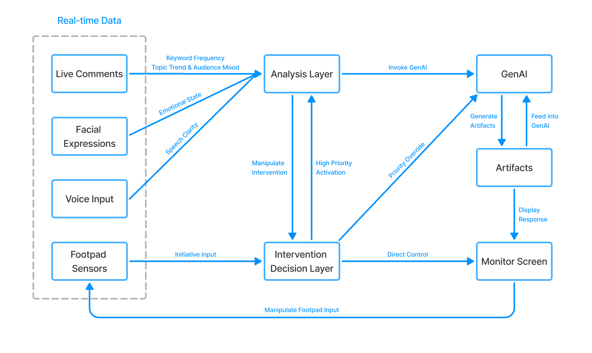

Live-Streaming Assistant
Link to projectA wearable speculative device reflecting on social media addiction, virtual identity, and behavioral feedback through physical and digital interaction cues.
Hi, I'm Chengran! I'm an undergrad at the University of Wisconsin-Madison
studying Computer Science and Information Science. I
previously studied Industrial Design, which continues to shape the way I approach technology, creativity, and
user-centered problem solving. My interdisciplinary background allows me to combine
technical development with design thinking to create more intuitive and meaningful
interactive experiences. I'm especially interested in human-computer interaction (HCI),
Human-AI Interaction (HAI) and intelligent technologies, particularly
how emerging technologies influence human behavior and everyday experiences.
At UW–Madison,
I am a research assistant at the People and Robots Lab building interactive systems through
the Quest for Intelligence initiative, exploring the relationship between people, AI,
and future interfaces.
Beyond research, I’ve also gained industry experience through software engineering
and data science internships at Siemens, where I worked on technical development,
automation workflows, and data-driven projects.
Outside of academics, I enjoy working out, snow skiing in winter times, and exploring the beauty around Madison.
You can find more information in my CV.

Human-Robot Service Interaction Research
• Developed and evaluated an autonomous human-robot interaction system using the Temi SDK, Kotlin, and Android Studio for service-delivery experiments.
• Engineered robot navigation workflows and spatial mapping for the entire first floor of Morgridge Hall, enabling autonomous localization, routing, and multi-point task execution.
• Assisted with behavioral experiment design, participant data collection, and interaction scenario analysis.

Live-Streaming Assistant
Link to projectA wearable speculative device reflecting on social media addiction, virtual identity, and behavioral feedback through physical and digital interaction cues.

Urban Halo
Link to projectA self-guided drone system designed to enhance the efficiency of traffic surveillance and management in urban environments, providing real-time data and insights to city planners and traffic authorities.
cxu429 at wisc dot edu

@ 2026 Chengran Xu